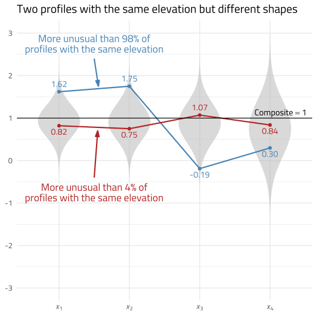
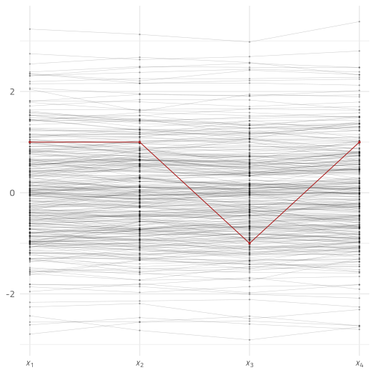

Introduction to the unusualprofile package
W. Joel Schneider & Feng Ji
2020-12-11
Source:vignettes/tutorial_unusualprofile.Rmd
tutorial_unusualprofile.RmdThe unusualprofile package can identify multivariate outliers conditional on predictors (Ji, 2018).
Univariate Outliers
A univariate outlier is far from most of the other scores in a distribution. You can easily spot a large outlier in the histogram in Figure @ref(fig:univariate).
A histogram with a univariate outlier.
If we want to quantify the extremity of the univariate outlier, we could convert the outlier to a z-score, which indicates the outlier’s distance from the population mean in standard deviation units. In this case, the outlier is 10 standard deviations from the mean of the other scores.
Multivariate Outliers
A univariate outlier refers to a single case from a single variable. A multivariate outlier refers to a single row of data consisting of 2 or more variables.
A multivariate outlier might not be unusual on any particular variable, but has an unusual pattern of scores. For example, in Figure @ref(fig:multivariate), the red point is not very unusual in a univariate context—just 1 standard deviation from the mean of either variable. However, because x and y are highly correlated, it is extremely rare for a data point to differ by 2 standard deviations.
A scatterplot with a multivariate outlier.
Scatterplots are great for inspecting multivariate outliers with a small number of variables. Unfortunately, scatterplots can only display 2 or 3 variables at a time. A different way to view multivariate data is to show each case as a profile of scores connected by lines. In the plot below, most of the lines are nearly flat—highly correlated variables with the same means and standard deviations will generally produce flat profiles. The multivariate outlier, in red, is clearly not flat.
A two-variable violin plot with a multivariate outlier.
Suppose that we have four variables, all standard normal. Because the four variables correlate at 0.99, the profiles are all quite flat. However, the red profile {1,1,−1,1} is much less flat, making it unusual in this context.
A four-variable violin plot with a multivariate outlier.
In Figure @ref(fig:multivariate-outlier-4), the red profile is obviously unusual. However, we cannot yet tell exactly how unusual it is. We would like a measure of its multivariate extremity.
Quantifying Multivariate Extremity
The Euclidean Distance
The simplest (but ultimately unsatisfying) way to measure a profile’s multivariate extremity is with the Euclidean distance. A multidimensional extension of the Pythagorean Theorem, the Euclidean distance is the square root of the sum of the squared differences on each dimension from some reference point. The reference point of interest is usually the vector of means from each variable—the centroid. The Euclidean distance of point p1 = (1,1,−1,1) to the centroid p2 = (0,0,0,0) is
\[\sqrt{(p_1-p_2)'(p_1-p_2)}=\sqrt{(1-0)^2+(1-0)^2+(-1-0)^2+(1-0)^2}=2\]
The Euclidean distance of point (1,1,1,1) to the centroid is also 2, yet if the two variables are highly correlated, point (1,1,−1,1) is much more unusual than point (1,1,1,1). Though fairly simple to calculate, the Euclidean distance is insensitive to the relationships among the variables, making it a poor choice for quantifying the extremity of profiles of correlated variables.
The Mahalanobis Distance
In 1936, P. R. Mahalanobis introduced a variant of the Euclidean distance that accounts for the covariance of the variables. Conceptually, the Mahalanobis distance is a Euclidean distance of profile scores if the variables are rotated and rescaled to fit on their principal component axes. Because principal components are always uncorrelated, distances in principal component space always have the same meaning regardless of the relationships of the original variables.
Computationally, the principal components need not be calculated explicitly. We simply need to invert the covariance matrix of the profile variables:
\[d_{M}=\sqrt{(X-\mu_X)'\Sigma_X^{-1}(X-\mu_X)}\]
Where
\(d_M\) is the Mahalanobis distance
\(X\) is a vector of variable scores
\(\mu_X\) is the vector of variable means of \(X\) (i.e., the centroid of \(X\))
\(\Sigma_X\) is the covariance matrix of the variables in vector \(X\)
If the variables in X are normally distributed, essentially the Mahalanobis distance is creating principal component scores that are uncorrelated standard normal variates, squaring each score, and then summing each row of scores. Adding squared uncorrelated standard normal variates just so happens to be how the χ2 distribution is made. The degrees of freedom in the χ2 distribution corresponds to the number of standard normal variates that are squared and summed.
Thus, if there are k normally distributed variables in vector X, the Mahalanobis distance squared for vector X has a χ2 distribution with k degrees of freedom. In mathematical notation:
\[d_M ^ 2 \sim \chi^2(k)\]
Thus, if we can assume the profile variables are multivariate normal, we can use the cumulative distribution function of the χ2 distribution to quantify how unusual a particular profile compares to the general population of profiles.
Suppose that a Mahalanobis distance for a row of data from 5 standard normal variates is 15.5. The cumulative distribution function for the χ2 distribution with 5 degrees of freedom is 0.99. Thus, the row of data is a multivariate outlier.
Conditional Mahalanobis Distances
A disadvantage of the Mahalanobis Distance is that it treats all the principal component dimensions equivalently. For highly correlated variables, the first principal component (or general factor) is of particular importance. We might want to distinguish between cases that are unusual on the first principal component and scores that are unusual on the remaining principal components.
For example, in a distribution of 4 highly correlated standardized variables, the point (4,4,4,4) is unusual because each point is unusual—four standard deviations above the mean. However, after accounting for its extreme elevation, the profile is perfectly flat. That is, the profile is unusually elevated, but has the modal profile shape. Of course, a perfectly flat profile is unusual in a different sense. It is extremely flat in the same sense that a score equal to the mean is extremely average.
In contrast, the point (−4, 4, −4, 4) is perfectly average in its elevation—the scores average to 0. It has, however, an unusually uneven shape.
Distinguishing Profile Shape from Profile Elevation
One way to define the profile elevation is to create a composite score from the sum of profile variables. All profiles that produce the same composite score are defined to have the same profile elevation. For ease of computation, the profile variables and the composite score can be re-scaled to have the same metric—preferably the z-score metric.

A simple model with standardized loadings
Suppose that we compare all profiles that have the same elevation but have different profile shapes. Imagine that four standardized variables correlate according to the structural model in Figure @ref(fig:one-dimensional).
| X1 | X2 | X3 | X4 | |
|---|---|---|---|---|
| X1 | 1 | .86 | .81 | .57 |
| X2 | .86 | 1 | .76 | .54 |
| X3 | .81 | .76 | 1 | .51 |
| X4 | .57 | .54 | .51 | 1 |
The correlations among the four variables are in @ref(tab:cor-table). Suppose from the population of profiles we select a subset of cases in which the profiles have an elevation of 1 (i.e., their composite score has a z-score of 1).
Conditional distributions for people with a composite score of 1.
In Figure @ref(fig:conditional-dist), two score profiles with an elevation of 1 are shown. The red profile is flat and unremarkable, whereas the blue profile is unusually uneven. The light gray vertical normal distribution on the left of each variable shows the population distribution of the unselected profiles, and the darker gray normal distribution on the right shows the conditional distributions of the selected profiles (i.e., all profiles with an elevation of 1). Note that X1 has a relatively narrow conditional distribution because its loading of λ = 0.95 is high, and X4 has a relatively wide conditional distribution because its loading of λ = 0.6 is lower.
A Worked Example
Suppose that among standard multivariate normal variables, there is a profile of scores \(X\):
\[X=\{X_1,X_2, X_3, X_4\} = \{2,3,1,2\}. \]
As seen in Figure @ref(fig:example-profile), this profile of scores is summarized by a composite score of 2.30.
Example profile in a standard multivariate normal distribution.
How can we calculate the Mahalanobis distance for profiles that all have the same elevation (i.e., composite score)? We will show how to do so in two ways. The easier of the two methods will be to use the simstandard package to create the data and the unusualprofile package to calculate the conditional Mahalanobis distance. For your reference, we also see how to do everything “by hand” using matrix algebra in the Calculations performed by the unusualprofile package vignette.
Calculations Using the simstandard and unusualprofile Packages
First we load several packages.
The simstandard package can create simulated multivariate normal data from a structural equation model. The first step is to specify the model using lavaan syntax:
model <- "X =~ 0.95 * X_1 +
0.90 * X_2 +
0.85 * X_3 +
0.60 * X_4"Using the simstandard package, we can find the model-implied correlation matrix.
# Model-implied correlations of all variables
R_all <- simstandard::get_model_implied_correlations(model, composites = TRUE)
R_all
#> X_1 X_2 X_3 X_4 X_Composite
#> X_1 1.00 0.85 0.81 0.57 0.93
#> X_2 0.85 1.00 0.76 0.54 0.91
#> X_3 0.81 0.76 1.00 0.51 0.89
#> X_4 0.57 0.54 0.51 1.00 0.75
#> X_Composite 0.93 0.91 0.89 0.75 1.00Using the same model, we can calculate composite scores from profile data like so:
# Create data.frame, and add the composite score
d <- data.frame(X_1 = 2,
X_2 = 3,
X_3 = 1,
X_4 = 2) %>%
simstandard::add_composite_scores(m = model)This will result in a single row of data, with observed test scores and a composite variable:
d
#> X_1 X_2 X_3 X_4 X_Composite
#> 1 2 3 1 2 2.3Although we can enter the names of the variables into the cond_maha function by hand, with large models it is less tedious to do so programmatically. Here we select the independent variable X_Composite:
# Independent composite variable names
v_X_composite <- d %>%
select(ends_with("Composite")) %>%
colnames
v_X_composite
#> [1] "X_Composite"Here we select the dependent variables:
# Dependent variable names
v_X <- d %>%
select(!ends_with("Composite")) %>%
colnames
v_X
#> [1] "X_1" "X_2" "X_3" "X_4"Now we use the cond_maha function to calculate the conditional Mahalanobis distance. Because the “independent” composite score can be predicted perfectly from the dependent scores, we specify it using the v_ind_composite parameter. Had it simply had been a predictor of the variables, it would have been specified using the v_ind parameter.
# Calculate the conditional Mahalanobis distance
cm <- cond_maha(data = d,
R = R_all,
v_dep = v_X,
v_ind_composites = v_X_composite)
cm
#> Conditional Mahalanobis Distance = 2.9246, df = 3, p = 0.9641The output of the cond_maha function can be displayed with the plot function.
plot(cm)A profile of z-scores in the context of population distributions (darker gray) and conditional distributions (lighter gray) controlling for overall composite score.
In Figure @ref(fig:cond-maha), we can see that the profile is more unusual than 96.41% of profiles with the same elevation (i.e., a composite score of z = 2.3). The conditional Mahalanobis distance of the dependent variables is 2.92, which is a 21% smaller than the unconditional Mahalanobis distance of the dependent variables 3.72.
Note that the Mahalanobis distance of the independent variable is 2.3. When added, the squared conditional Mahalanobis distance and the squared Mahalanobis distance of the independent variable equal the squared unconditional unconditional Mahalanobis distance of the dependent variables (within rounding error).
\[\begin{align*} 2.92^2 + 2.3^2 &= 3.72^2 \\ d_{CM}^2 + \text{Independent}~d_M^2 &= \text{Dependent}~d_M^2\\ \end{align*}\]
It is not a coincidence that this relationship resembles the Pythagorean theorem. In principal component space, these distances form a right triangle. However, this equation only holds true when the independent variables are perfectly predicted by the dependent variables such as when the independent variables are composites of the dependent variables.
A More Complex Example
General Comprehension/Knowledge (Gc) and General Auditory Processing (Ga) Predict Reading Decoding and Reading Comprehension
Suppose we have a simplified model of reading ability and its predictors as shown in Figure @ref(fig:reading-model). The two predictors of reading ability are General Comprehension/Knowledge (Gc) and General Auditory Processing (Ga). These cognitive abilities are precursor abilities to Reading Decoding (RD) and Reading Comprehension (RC). Ga is a stronger predictor of RD than of RC. For Gc, the reverse is true. Each cognitive and academic ability is measured with three tests each.
We want to know if a person’s pattern of reading scores are unusual, given the cognitive scores.
Here we load packages we will need.
We can use lavaan syntax to specify the standardized coefficients of our model.
# Model of Reading
m_reading <- "
Ga =~ 0.83 * Ga1 + 0.92 * Ga2 + 0.95 * Ga3
Gc =~ 0.88 * Gc1 + 0.71 * Gc2 + 0.85 * Gc3
RD =~ 0.93 * RD1 + 0.87 * RD2 + 0.85 * RD3
RC =~ 0.91 * RC1 + 0.86 * RC2 + 0.90 * RC3
Ga ~~ 0.68 * Gc
RD ~ 0.47 * Ga + 0.53 * Gc
RC ~ 0.05 * Ga + 0.40 * Gc + 0.43 * RD
"Here we enter the standard scores (Mean = 100, SD = 15) for a single person. Then we convert each standard score to z-scores. Finally, we use the simstandard package’s add_composite_scores and add_factor_scores function to add composite scores and estimated factor scores to the data frame.
d_case <- tibble(
Ga1 = 71,
Ga2 = 65,
Ga3 = 75,
Gc1 = 108,
Gc2 = 99,
Gc3 = 123,
RD1 = 77,
RD2 = 71,
RD3 = 81,
RC1 = 90,
RC2 = 84,
RC3 = 107
) %>%
simstandard::add_composite_scores(m = m_reading, mu = 100, sigma = 15) %>%
simstandard::add_factor_scores(m = m_reading, mu = 100, sigma = 15)| Ability | Score | z-score | p |
|---|---|---|---|
| Ga (Composite) | 68 | -2.12 | .02 |
| Ga (Factor Score) | 71 | -1.96 | .03 |
| Ga1 | 71 | -1.93 | .03 |
| Ga2 | 65 | -2.33 | .01 |
| Ga3 | 75 | -1.67 | .05 |
| Gc (Composite) | 111 | 0.76 | .78 |
| Gc (Factor Score) | 104 | 0.26 | .60 |
| Gc1 | 108 | 0.53 | .70 |
| Gc2 | 99 | -0.07 | .47 |
| Gc3 | 123 | 1.53 | .94 |
| RC (Composite) | 93 | -0.45 | .32 |
| RC (Factor Score) | 93 | -0.45 | .33 |
| RC1 | 90 | -0.67 | .25 |
| RC2 | 84 | -1.07 | .14 |
| RC3 | 107 | 0.47 | .68 |
| RD (Composite) | 74 | -1.71 | .04 |
| RD (Factor Score) | 79 | -1.42 | .08 |
| RD1 | 77 | -1.53 | .06 |
| RD2 | 71 | -1.93 | .03 |
| RD3 | 81 | -1.27 | .10 |
Case Scores
Conditional Mahalanobis Distances with Indicator Scores Only
Suppose that we want to know if the academic performance scores are unusual, given the cognitive predictor scores.
The variable names for the cognitive predictors and the reading ability scores can be specified like so:
v_cognitive <- c(paste0("Ga", 1:3),
paste0("Gc", 1:3))
v_reading <- c(paste0("RD", 1:3),
paste0("RC", 1:3))Now let’s see if the academic scores are unusual after controlling for the cognitive predictors:
dCM <- cond_maha(
data = d_case,
R = simstandard::get_model_implied_correlations(m_reading),
mu = 100,
sigma = 15,
v_dep = v_reading,
v_ind = v_cognitive)Controlling for the cognitive predictors, did not alter our conclusion that the reading profile is unusual. It appears that the Reading scores are more unusual than about 93% of Reading profiles from people with the same specified cognitive predictor scores.
We can see that all three decoding tests are lower than expectations, particularly RD2, the reading comprehension tests are within expectations, though RC3 is somewhat high.
plot(dCM)Conditional Distributions for Reading, Controlling for Cognitive Predictors
Composite Score Model
Often, all we need do is calculate the composite scores and see if they are within expectations.
v_cognitive_composite <- paste0(c("Ga", "Gc"),"_Composite")
v_reading_composite <- paste0(c("RD", "RC"),"_Composite")
# Conditional Reading Profile
cond_maha(data = d_case,
R = get_model_implied_correlations(m_reading, composites = TRUE),
v_dep = v_reading_composite,
v_ind = v_cognitive_composite,
mu = 100,
sigma = 15) %>%
plot()
Observed Scores, Given Composite Scores
Suppose that we want to know if the observed Gc scores are unusual, given the composite Gc score we have estimated.
cond_maha(d_case,
R = get_model_implied_correlations(m_reading, composites = TRUE),
v_dep = c(v_cognitive, v_reading),
v_ind = c(v_cognitive_composite, v_reading_composite),
mu = 100,
sigma = 15) %>%
plot() +
theme(axis.text.x = element_text(angle = 45, hjust = 1))
Factor-score model
Factor scores can be calculated calculated using Thurstone’s method (Thurstone, 1935):
\[\hat{F}= R_{FF}\Lambda_{FX} R_{XX}^{-1}X=R_{FX}R_{XX}^{-1}X\]
Where
\(\hat{F}\) is a vector of a person’s estimated factor scores.
\(R_{FF}\) is the correlation matrix among the latent factors.
\(\Lambda_{FX}\) is the matrix of loadings from factors to observed scores.
\(R_{FX}\) is a correlation matrix between the common factors and the observed variables.
\(R_{XX}^{-1}\) is the inverse of the correlation matrix among the observed variables.
\(X\) is a vector of a person’s standardized scores on the observed variables.